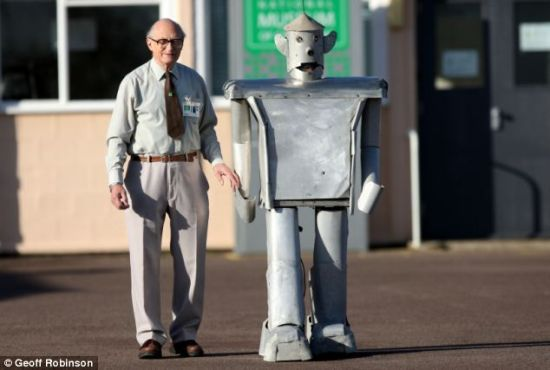
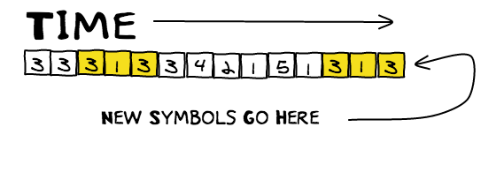
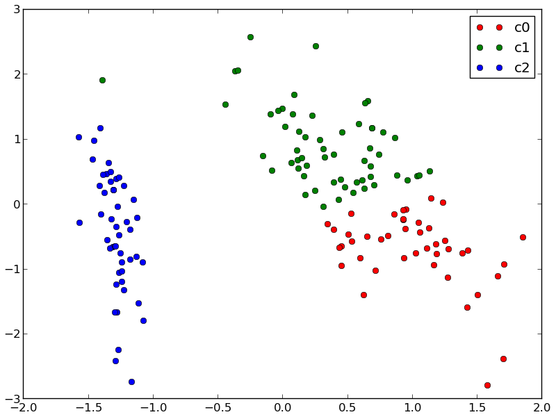
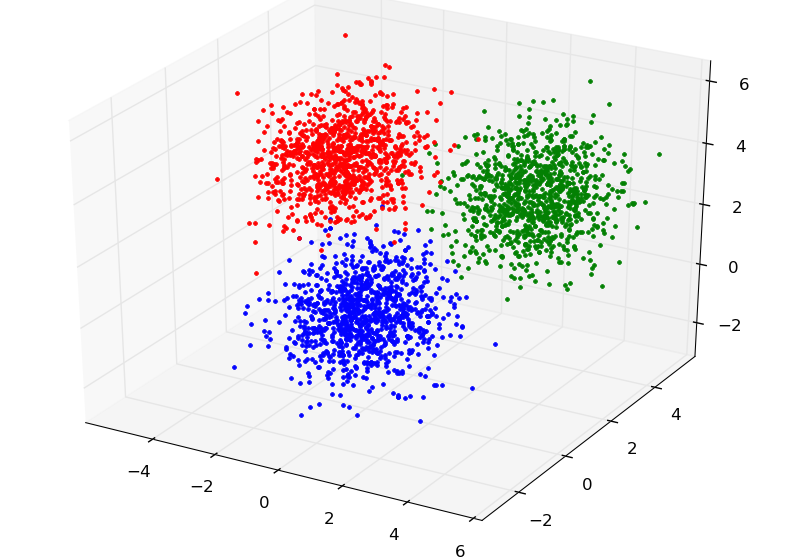
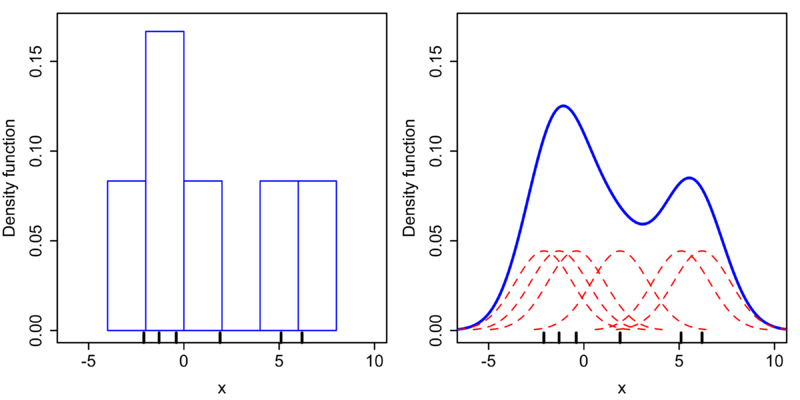
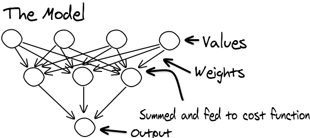
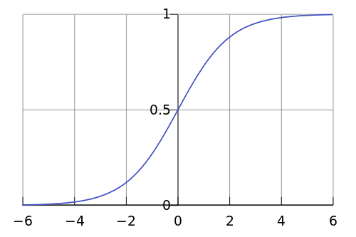

Simple Pattern Matching
in RobocodeWho Am I?
- Tinkerer
- Project Starter
- Excited about computer science
Why am I qualified to present this CoP?
Why Is the Topic Important?
Introduction to Robocode
Our approach:
- Assume the scanner is working perfectly.
- Ignore everything but the gun.
- Shoot at a target that doesn't shoot back.
- Start simple and build up.

The core of machine learning deals with representation and generalization.
- from Wikipedia
Representation: Features
Given
|
Computed
|
Symbolic Pattern Matching
- Create a symbol from the current features.
- Add the current symbol to a stored sequence.
- Search the sequence for the current symbol.
- If found, move to the symbol adjacent to the matched symbol and check for another match.
- Record the longest match. This is most like the current sequence and may lead to a similar outcome.
Why Symbols?
- Discrete value
- Limited alphabet
- Existing algorithms
How to make a symbol


Symbolic Pattern Matching
Advantages- Fairly straightforward
- No math
- Existing algorithms, especially from string processing
- Long match implies strong prediction
Symbolic Pattern Matching
Disadvantages- Space and Time as n grows
- Doesn't exactly generalize
- Small alphabet means coarse measurement
- Relatively slow learning
Clustering / Nearest Neighbor Search
- Search for k observations most similar to the current observation.
- Determine the most likely outcome from the matched observations.
- When the outcome is known, store it.


Distance
- Euclidean - what you expect
- Manhattan - city block
- Chebyshev - most significant dimension
- Mahalanobis - normalized covariance matrix?
- Minkowski - combo
How do we determine the most likely outcome?
- Mode
- Mean
- Median
- Something else?
Kernel Density Estimation
Clustering
Advantages- Clear
- Very effective (in my experience)
- Fast learning
- Good generalization
Clustering
Disadvantages- Space and time as n grows
- May over-generalize with large samples or when behavior changes often.(temporal sensitivity)
Artificial Neural Networks
- Feed features into the impenetrable network.
- Receive a projected outcome and hope it's correct.
- When the outcome is known, adjust the network.

Cost function - usually sigmoid:
(2 / (1 + Math.exp(-2 * x))) - 1;
Backpropagation
Use the derivative of the cost function to adjust weights.ANN
Advantages- Small representation that doesn't grow
- Good generalization
- Fast learning with enough tweaks
ANN
Disadvantages- Impenetrable
- Temperamental
- Over fitting
- Local minima
Other approaches
- Multivariant Regression
- Genetic Algorithms
- Simulated Annealing
- Bayesian Analysis
- Markov Chains
- Support Vector Machines
Improvements
- Pattern Matching: Indexing
- PM: Best density of several matches
- Clustering: K-d Trees
- Feature Saliency